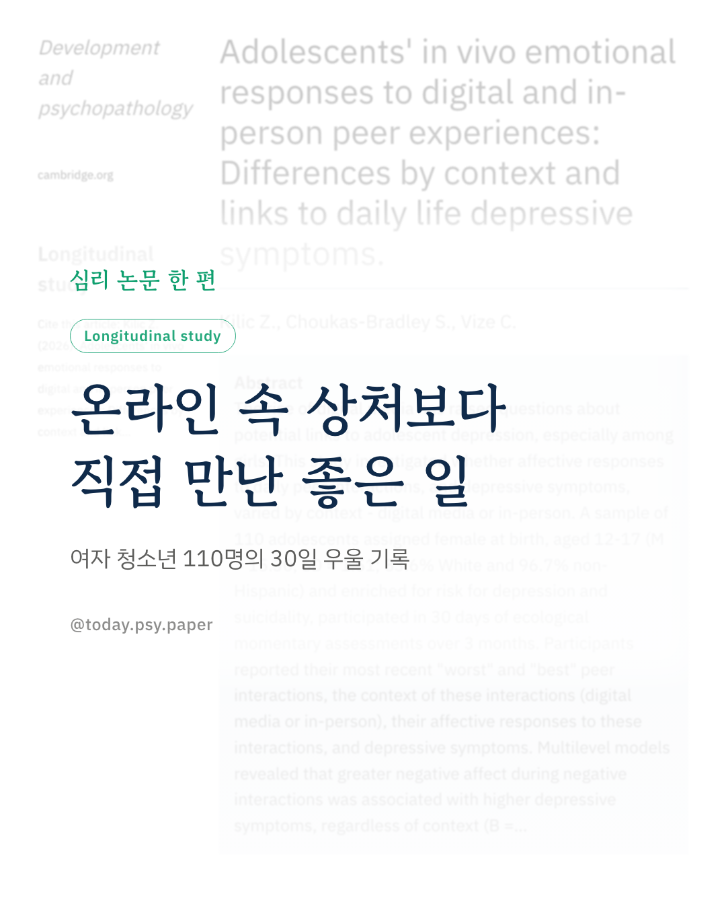
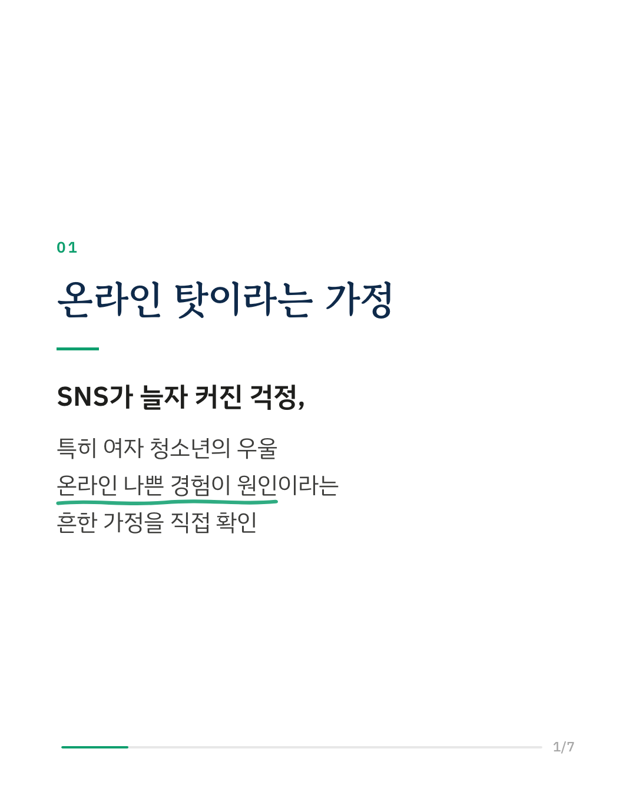
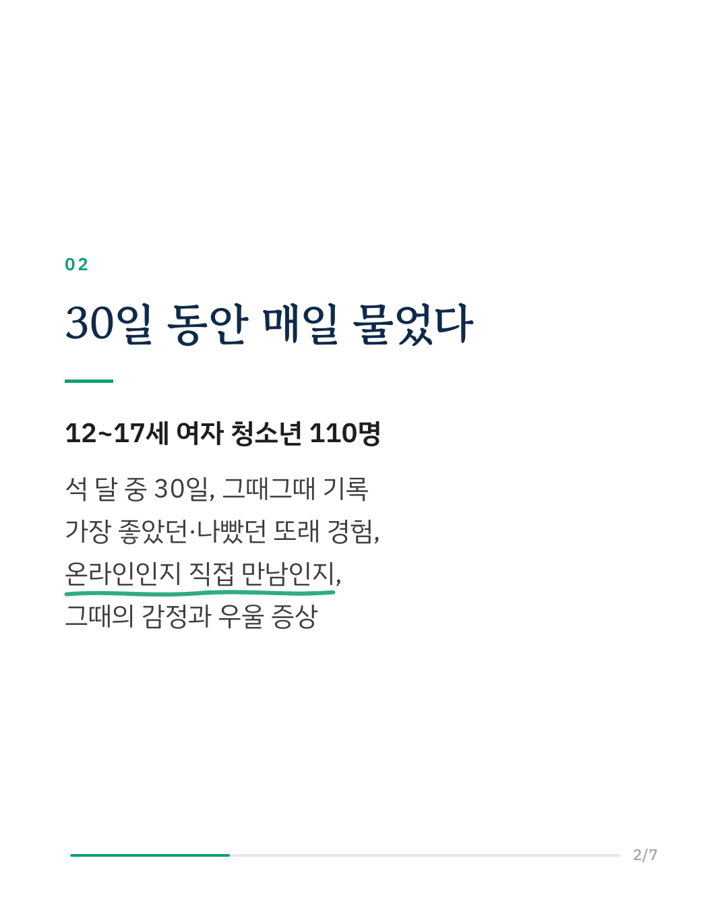
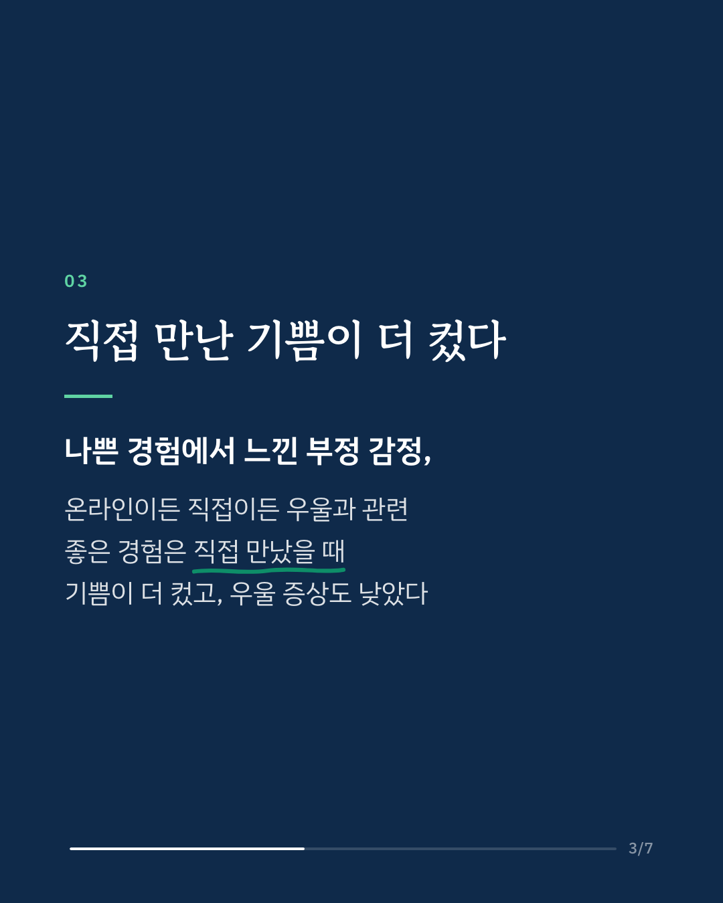
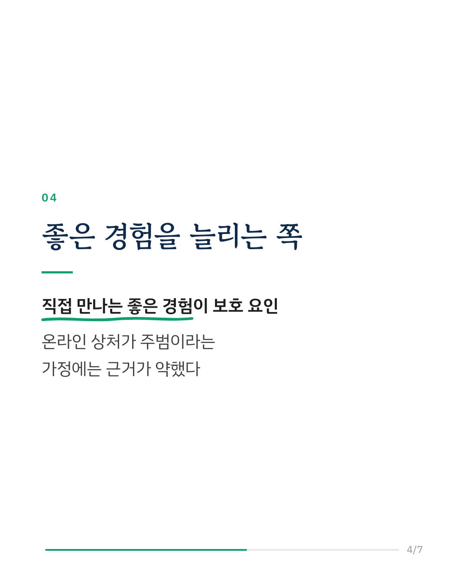
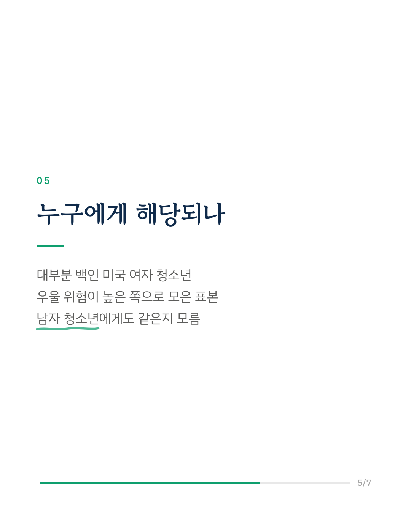
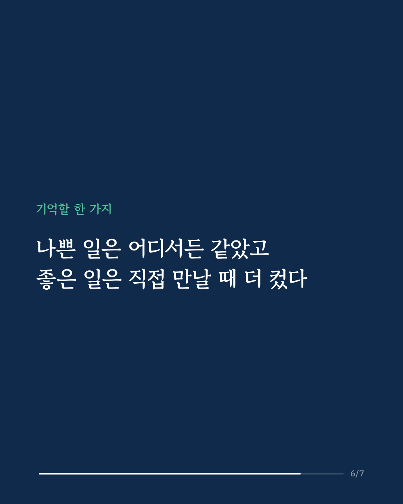
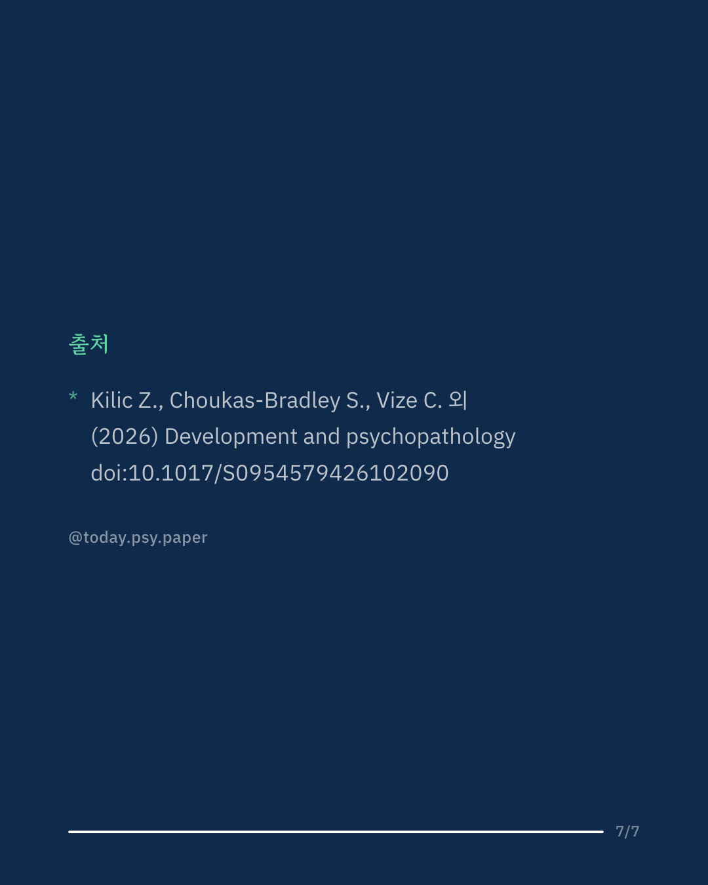

SNS가 청소년 우울을 키운다는 걱정은 흔하지만, 실제로 어떤 경험이 우울과 이어지는지는 분명하지 않았습니다. 이 연구는 12~17세 여자 청소년 110명에게 석 달 중 30일 동안 그때그때 질문을 보내, 가장 좋았던 또래 경험과 가장 나빴던 또래 경험, 그 일이 온라인에서였는지 직접 만나서였는지, 그때 느낀 감정과 우울 증상을 기록하게 했습니다. 참가자는 우울 위험이 높은 쪽으로 모은 집단이었습니다. 나쁜 경험에서 느낀 부정적 감정이 클수록 우울 증상이 높았고, 이 관계는 온라인이든 직접 만남이든 같았습니다. 반면 좋은 경험은 상황에 따라 달랐습니다. 직접 만나서 겪은 좋은 일은 온라인에서 겪은 좋은 일보다 긍정적 감정이 더 컸고, 그 긍정적 감정은 낮은 우울 증상과 관련이 있었습니다. 연구진은 온라인의 나쁜 경험이 청소년 우울의 주된 원인이라는 가정에 의문을 던지고, 직접 만나는 좋은 경험이 정서적 안녕을 지켜 주는 역할을 할 수 있다고 말합니다. 참가자가 대부분 백인 미국 여자 청소년이어서 남자 청소년이나 다른 문화권에도 같은 결과가 나올지는 알 수 없습니다. Development and Psychopathology (2026), 'Adolescents' in vivo emotional responses to digital and in-person peer experiences: Differences by context and links to daily life depressive symptoms' DOI: 10.1017/S0954579426102090 #임상심리 #정신건강정보 #심리학연구 #논문리뷰 #청소년우울 #소셜미디어 #또래관계
python3 publish.py 42929364